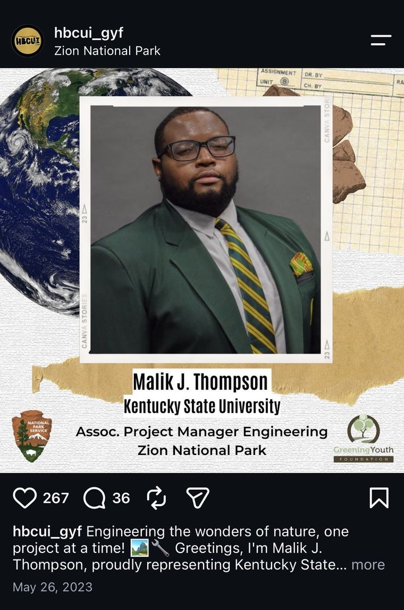

The intern spotlight
May 26, 2023267Likes
36Comments
- Design
- I kept the program's existing look and leaned into travel and conservation symbolism: a globe, field-notebook paper, a framed photo like a travel keepsake, and the National Park Service and Greening Youth marks in the corners. Name, school, role and park sit in a fixed order so the series reads as one set.
- Caption formula
- A short line about the intern's work, written from their major, then "I'm [name], proudly representing [HBCU] as [role] at [park]." Following the brand's earlier captions kept the voice consistent while each opener stayed specific to the person.
- Search and discovery
- Every spotlight carried keywords people actually search for: the park's name, the college, the job title, and motivational vocabulary. Hashtags did the same work. Each post could be found by the intern's school, the park, and the program.
- Why it worked
- Each spotlight gave an intern, their family, their school and their park a reason to like, comment and share. That built-in audience is why engagement grew faster than reach.
Engineering the wonders of nature, one project at a time! Greetings, I'm Malik J. Thompson, proudly representing Kentucky State University…